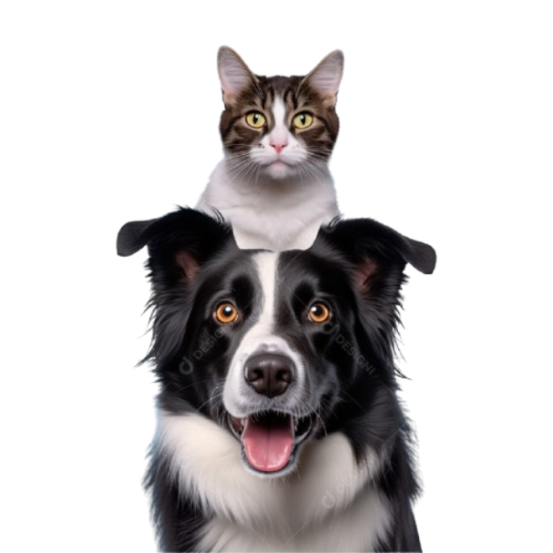
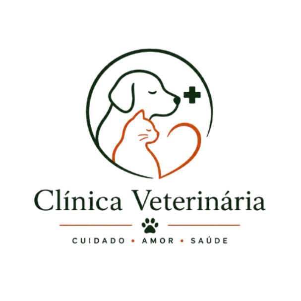
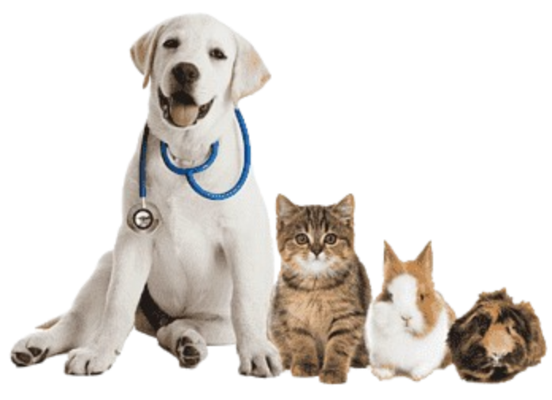

A sua unidade de Pronto

SOBRE NÓS
Na Clínica VET, oferecemos atendimento veterinário 24 horas com cuidado, agilidade e dedicação. Nossa equipe é formada por profissionais qualificados, prontos para atender desde emergências até cuidados de rotina, sempre com atenção e carinho. Trabalhamos com o compromisso de garantir a saúde e o bem-estar do seu pet, tratando cada animal como parte da família — a qualquer hora do dia ou da noite.
Nossas Especialidades
- Cirurgias
- Neurocirurgia
- Anestesia inalatória
- Cardiologia
- Odontologia
- Oftalmologia
- Pneumologia
- Fisioterapia
- Oncologia
- Dermatologia
- Neurologia
- Ortopedia
- Nefrologia
- Endocrinologia
- Nutrologia
- Gastroenterologia
- Silvestres / Exóticos
Vantagens do Nosso Atendimento
Atendimento 24 horas
Equipe disponível todos os dias, inclusive finais de semana e feriados, preparada para agir com rapidez em emergências.
Cuidado Humanizado

Tratamos cada pet como único, com atenção, carinho e comunicação clara com os tutores em todas as etapas.
Estrutura completa

Equipamentos modernos e suporte para diagnóstico e tratamento ágil, garantindo mais segurança e praticidade.
CONTATOS & LOCALIZAÇÃO
Fale Conosco 24h
ENDEREÇO
Rua das Acácias, 247 – Sala 302 Bairro Jardim Primavera
Whatsapp
+55 (61) 9 8457-2931
Telefone
+55 (61) 3342-7815
Horários de funcionamento
De Seg. a Dom. 24 horas
Nossa Localização